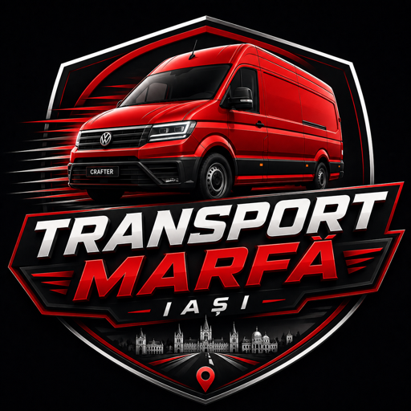
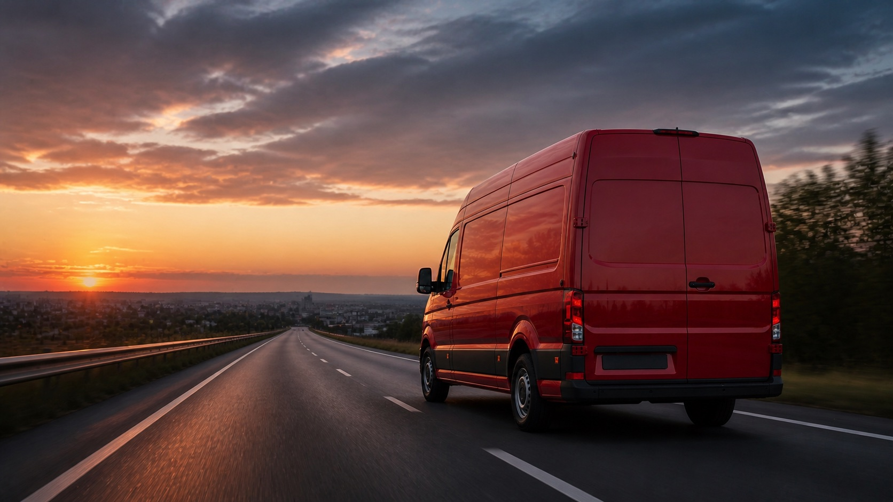

Transport mobilier si bunuri voluminoase
Transport pentru mobilier, electrocasnice si bunuri voluminoase, cu incarcarea si descarcarea organizate de client.

Transport Iasi Iasi & apropiere Telefon
Transport marfa local in Iasi
Transport mobilier, electrocasnice, colete voluminoase si marfa ambalata in Iasi si in apropiere. Disponibil pentru curse mai lungi in weekend.
Transport marfa in Iasi, zona metropolitana si localitati apropiate. In weekend se pot face si curse mai lungi, in functie de distanta si disponibilitate.
Pot ajuta punctual la bunuri usoare, dar nu exista echipa dedicata pentru incarcare si descarcare.
Sambata si Duminica oricand, inclusiv pentru curse mai lungi in afara Iasului.
Ce pot transporta
VW Crafter L4H3 este potrivit pentru transport: mobilier, electrocasnice, materiale, colete voluminoase, echipamente, marfa ambalata si obiecte care necesita o autoutilitara incapatoare.
Transport pentru mobilier, electrocasnice si bunuri voluminoase, cu incarcarea si descarcarea organizate de client.
Ridicare si livrare bunuri mari, cu ora si traseul stabilite inainte.
Solutie eficienta pentru produse ambalate, materiale sau echipamente.
Transport in imprejurimi si curse mai lungi in weekend, in functie de distanta.
Vehicul
Autoutilitara incapatoare, aleasa pentru transporturi care cer volum mare, incarcare organizata si predictibilitate pe traseu.
Configuratia L4H3 ajuta la transport mobila, electrocasnice, colete mari si marfa ambalata. Transportul se discuta inainte pentru a confirma ca obiectele se potrivesc.
Disponibilitate
Transporturile de marfa din timpul saptamanii se pot realiza seara, dupa program.
Disponibilitate flexibila pentru transport in weekend, inclusiv curse mai lungi in afara Iasului.
Pot ajuta la nevoie, insa pentru obiecte grele sau voluminoase este bine sa existe ajutor la incarcare si descarcare.

Curse in weekend
In weekend pot face si curse mai lungi, cu detaliile discutate inainte in functie de traseu, program si bunurile transportate.
Cere detaliiIntrebari frecvente
Cateva raspunsuri clare despre program, zona de lucru, bunurile potrivite pentru transport si organizarea incarcarii.
Nu exista echipa dedicata de manipulare. Pot ajuta punctual la bunuri usoare, dar pentru obiecte grele sau voluminoase este nevoie de ajutor la incarcare si descarcare.
Mobilier, electrocasnice, colete voluminoase, materiale, echipamente, marfa ambalata si alte bunuri care se potrivesc in autoutilitara.
Transportul se face in Iasi, zona metropolitana si localitati apropiate. In weekend se pot face si curse mai lungi, in functie de distanta si disponibilitate.
De luni pana vineri, dupa ora 18:00. Sambata si duminica, programul este flexibil, cu stabilire in prealabil.
Pretul depinde de distanta, tipul bunurilor, volum, accesul la ridicare si livrare si intervalul dorit. Pentru o estimare corecta sunt utile adresele si cateva detalii despre bunuri.
Da, daca este posibil. Dimensiunile aproximative ajuta la confirmarea faptului ca bunurile se potrivesc in autoutilitara si ca transportul poate fi organizat eficient.
Contact
Transport in Iasi, zona metropolitana si localitati apropiate, cu traseu si ora stabilite in prealabil. In weekend se pot face si curse mai lungi, in functie de distanta si disponibilitate.
Pentru o estimare corecta, pregateste adresele, intervalul dorit, tipul bunurilor, numarul aproximativ de obiecte si daca exista conditii speciale de acces la ridicare sau livrare.
Adresa ridicare, adresa livrare, data, ora, dimensiuni aproximative si tipul bunurilor.